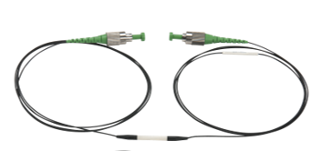
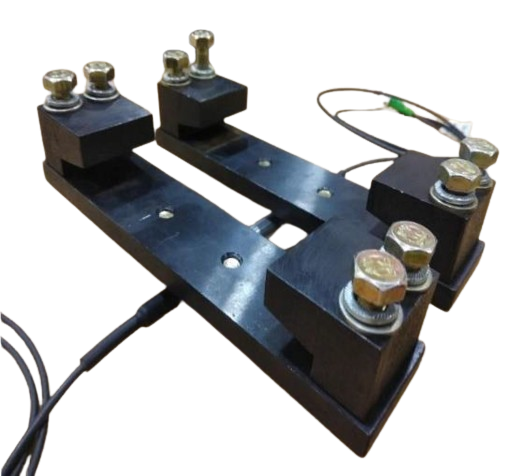
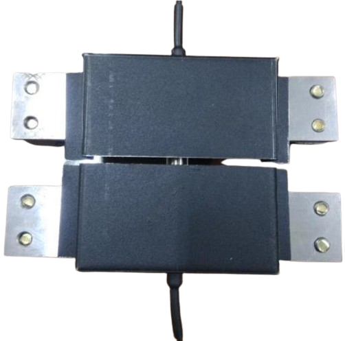
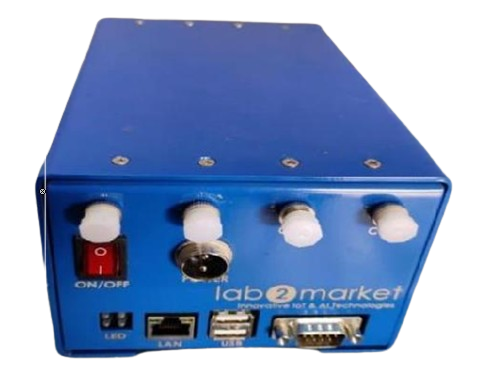
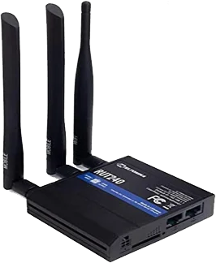

High Level Architecture
The above picture shows various hardware components that are used in MVIS system and their inter-connection.
Hardware Overview
Two pairs of FBG sensors are strategically mounted at an appropriate distance ahead of the measurement zone to detect the entry and exit of a train. The trigger's location is determined by the FBG system's design, ensuring sufficient headway time for the system to initiate data acquisition. The sensors are multiplexed in series using ruggedized (armored) fiber cables, and they are terminated in a standard fiber splice protector. These sensors are routed to the junction box, positioned near the WILD zone. The distance from the entry and exit trigger locations to the measurement zone is 30 meters.
Trigger FBG Sensor
The system comprises an array of 16 FBG sensors arranged to ensure 100% wheel coverage. These sensors are securely attached to the rail using specially designed packages that can withstand harsh outdoor conditions. The FBG vertical load sensors are mounted beneath the rail using clamps, ensuring they do not interfere with the rail's normal operation. Each sensor is housed in a robust metal protective casing and installed at the midpoint between two sleepers. The armored optical cable is routed from the packaged FBG sensor to the junction box through an HDPE pipe, and from the junction box to the interrogator via a duct cable.
Sensor Fixture
Sensor Protective Casing
Each FBG sensor is multiplexed in series using ruggedized fiber cables. To monitor the train's left and right wheels, two separate sets of FBG sensors are mounted on the left and right rails of the railway track. The sensors are clearly identifiable, allowing for easy replacement or installation without much hassle. They are terminated in standard fiber junction boxes (FDMS) that meet RDSO specification RDSO/SPN/TC/68/2014, located near the sensing zone. The non-terminated ends of the fiber are then connected to the indoor equipment using ruggedized single-mode fiber cables, compliant with RDSO-approved ITU specification G 652D. The outdoor cables are buried at a suitable depth of 1 foot to avoid interference with any railway operations. The fiber is housed inside HDPE pipes in accordance with RDSO specification RDSO/SN/45/2006. A torque wrench is used to apply uniform tension and load to all bolts of the sensor fixture. It allows for setting a specific torque range for all fasteners. In this case, a torque value of 35 Nm is applied to secure the nuts to the rail. To prevent the bolts from loosening, a Loctite thread locker is used.
An interrogator is an opto-electronic instrument used to measure the wavelength of light reflected from optical Fiber Bragg Grating (FBG) sensors in both static and dynamic monitoring applications. It functions by sending light into a fiber and receiving the light reflected back from the FBG sensors. The optical fibers carrying light signals from the FBG sensors are connected to different channels of the interrogator. The reflected light's wavelength is then compared with the central wavelength of the FBG. When a train wheel rolls over the rail section equipped with an FBG sensor, the reflected light's wavelength shifts from its central wavelength. This shift is proportional to the strain on the rail caused by the train wheel. The data collected from the interrogator, corresponding to the wavelength shift, are then transmitted to the FBG Data Processing Unit.
Interrogator
An Internet gateway is a network device or software that serves as a connection point between a local network and the broader internet. It acts as a bridge, managing data traffic between the internal network and external networks, allowing devices within a private network to access the internet. Internet gateways can be implemented through hardware devices, such as routers or firewalls, or as software solutions integrated into network systems.
Internet Gateway
The cloud server is a private server service from Railtel, running on the Ubuntu operating system. The server hosts the F-WILD website and includes a communication module to receive data from one or more DPUs installed at the respective F-WILD sites, as well as a data logging module to store the data received from the DPUs.
The power supply installed inside the location box is a 230V AC to 24V DC converter and functions as an Uninterruptible Power Supply (UPS) for all the equipment, including the DPU, interrogator, and internet gateway. It has the capacity to provide power for up to 8 hours even in the absence of 230V AC power..